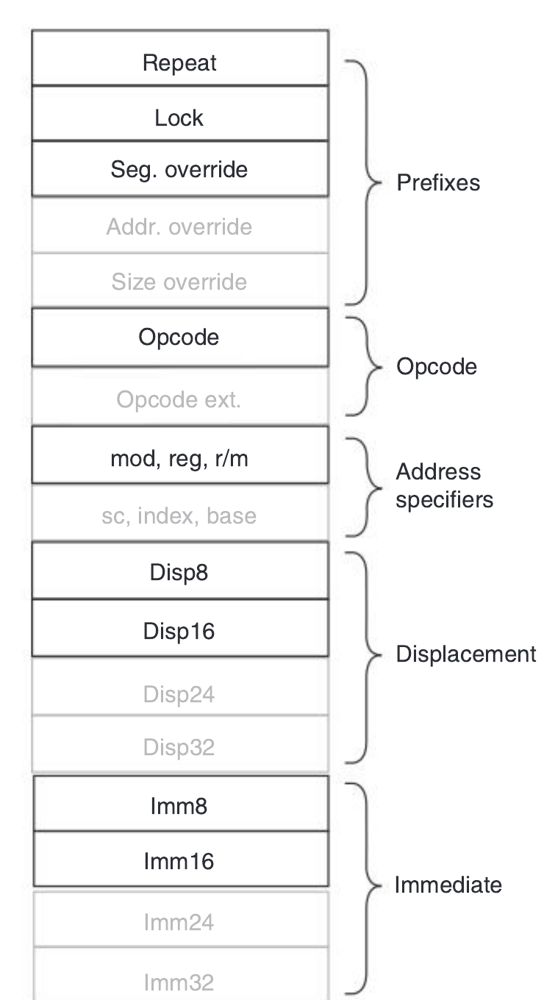
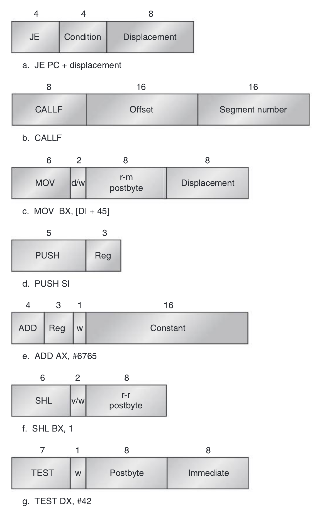
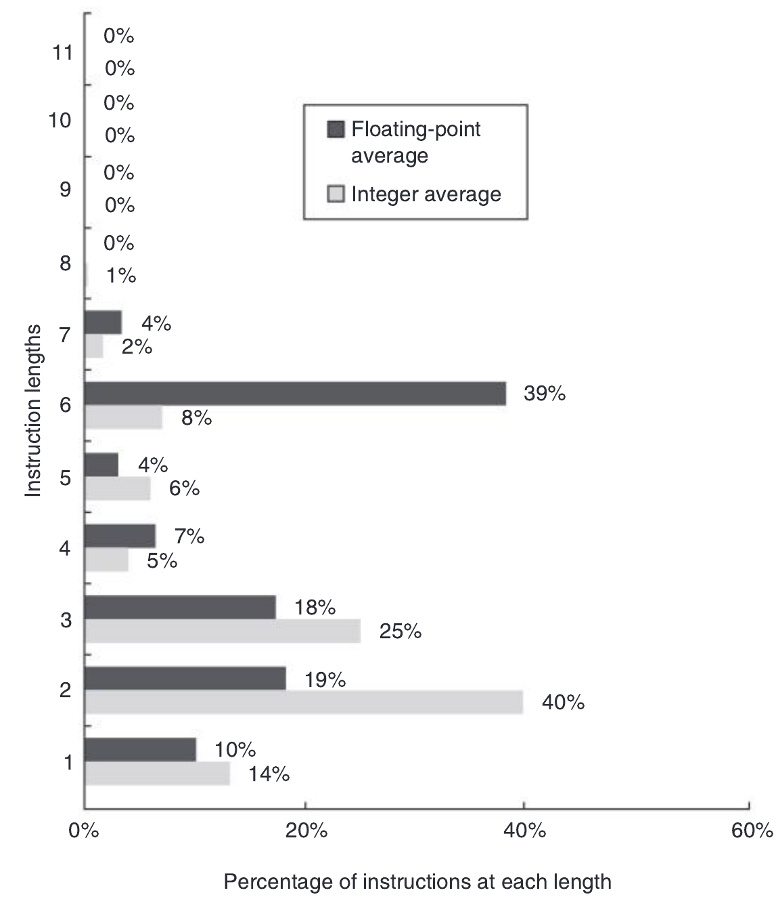

K.3 Intel 80x86
引言
MIPS 出自一位设计者的构想，各个部分配合得很好，整个体系结构可以描述得很简洁。80x86 则不然。它出自几个相互独立的小组，这些小组在 20 年间不断改进这个体系结构，往原有指令系统里添加新特性，就像往一个已经装满的包里再塞衣服。下面是 80x86 的几个重要里程碑：
- 1978 年，Intel 发布 8086 体系结构。8086 是当时很成功的 8 位微处理器 Intel 8080 的扩展，在汇编语言层面与 8080 兼容。8086 是 16 位体系结构，所有内部寄存器都是 16 位宽。8080 是简单的累加器机器，8086 则增加了寄存器，扩展了这一体系结构。由于几乎每个寄存器都有专门的用途，8086 介于累加器机器和通用寄存器机器之间，称它为扩展累加器机器是恰当的。
- 1980 年，Intel 发布 8087 浮点协处理器。8087 在 8086 的基础上增加了约 60 条浮点指令。它的设计者没有采用扩展累加器，而是选择了栈和寄存器的混合结构，实质上是一种扩展栈体系结构：以一套完整的栈指令为主，再补充少量寄存器-存储器指令。
- 1982 年，80286 对 8086 体系结构做了三方面扩展：地址空间扩大到 24 位；建立了一套精细的存储映射和保护模型；增加了几条指令，用来补全指令系统和操作保护模型。让 8086 程序不加修改就能运行十分重要，因此 80286 提供了一种实地址模式，使机器看起来和 8086 完全一样。
- 1985 年，80386 把 80286 体系结构扩展到 32 位。除了 32 位寄存器和 32 位地址空间之外，80386 还增加了新的寻址方式和运算。新增的指令使 80386 几乎成了一台通用寄存器机器。80386 在分段寻址之外还支持分页（见第 2 章）。和 80286 一样，80386 也有一种不加修改就能执行 8086 程序的模式。
从这段历史可以看出，兼容性这副「金手铐」对 80x86 的影响有多大：每一步已有的软件都太重要，不能让体系结构的重大改动危及它们。好在此后的 80486（1989 年）、Pentium（1992 年）和 P6（1995 年）都以提高性能为目标，用户可见的指令系统只增加了四条指令：三条用于支持多处理，另一条是条件传送指令。
从 1997 年起，Intel 增加了数百条支持多媒体的指令，它们在一个时钟周期内同时处理多个较窄的数据（见附录 A）。这类 SIMD 指令或向量指令主要用在手工编写的库或驱动程序中，编译器很少生成它们。第一个扩展称为 MMX，1997 年推出，共 57 条指令。这些指令把多个字节、16 位字或 32 位双字打包到 64 位寄存器中，或者从中拆包，并对这些窄数据并行地做移位、逻辑运算和整数算术运算，饱和运算和非饱和运算都支持。MMX 借用组成浮点栈的寄存器，因此操作系统不需要保存新的状态。
1999 年，Intel 随 Pentium III 又增加了 70 条指令，称为 SSE。主要变化有三点：一是增加了 8 个独立的寄存器，二是寄存器宽度加倍到 128 位，三是增加了单精度浮点数据类型。因此可以并行执行 4 个 32 位浮点运算。为了提高访存性能，SSE 还提供了 Cache 预取指令，以及绕过 Cache、直接写存储器的流式存数（streaming store）指令。
2001 年，Intel 又增加了 144 条指令，这次称为 SSE2。新增的数据类型是双精度算术，可以并行执行两个 64 位浮点运算。这 144 条指令几乎都是已有 MMX 和 SSE 指令的新版本，并行处理 64 位数据。这一变化不仅支持多媒体运算，还让编译器在那套独特的栈体系结构之外，多了一种浮点运算的目标：编译器可以选择像在 RISC 机器上那样，把 8 个 SSE 寄存器当作浮点寄存器使用。Pentium 4 是第一个包含 SSE2 指令的微处理器，它的性能因此得到提高。发布时，1.5 GHz 的 Pentium 4 与 1 GHz 的 Pentium III 相比，SPECint2000(base) 性能是后者的 1.24 倍，SPECfp2000(base) 性能则是后者的 1.88 倍。
2003 年，这一次扩充 IA-32 体系结构的是 Intel 以外的公司：AMD 发布了一组体系结构扩展，把地址空间从 32 位扩大到 64 位。与 1985 年 80386 从 16 位地址空间过渡到 32 位时类似，AMD64 把所有寄存器都加宽到 64 位。AMD64 还把寄存器数目增加到 16 个，另有 16 个 128 位寄存器支持 XMM，即 AMD 针对 SSE2 推出的对应扩展。主要变化不在于扩充指令系统，而在于增加了一种称为长模式（long mode）的新模式，它重新定义了所有 IA-32 指令在 64 位地址下的执行方式。为了访问更多的寄存器，AMD64 给指令增加了一个新的前缀。AMD64 仍保留一种与标准 Intel 指令系统向后兼容的 32 位模式，因此向 64 位寻址的过渡比 HP/Intel 的 Itanium 更平稳。后来 Intel 也跟随 AMD，做了几乎相同的改动，于是大多数软件不加修改就能在这两种 64 位地址的 80x86 上运行。
不管 80x86 在美感上有多少败笔，都要记住：在全世界的服务器和桌面处理器中，这一体系结构家族的数量比其他任何体系结构都多。尽管如此，它的来历驳杂，结果成了一个难以讲清、也不可能让人喜爱的体系结构。
下面先讲寄存器和寻址方式，然后讲整数运算，再讲浮点运算，最后考察指令编码。
80x86 的寄存器和数据寻址方式
从 80x86 的寄存器可以看出指令系统的演变过程（图 K.30）。图中原有的寄存器用黑色字体表示，80386 扩展的部分用浅色表示，后面的图也沿用这种着色方式。80386 基本上把所有 16 位寄存器（段寄存器除外）都扩展到 32 位，在寄存器名前加「E」表示 32 位版本。算术、逻辑和数据传送指令都是双操作数指令，允许的操作数组合见图 K.31。
![图 K.30 80x86 随时间不断演变，它的寄存器组也是如此。原有的寄存器用黑色表示，扩展的寄存器用灰色表示。8086 把前四个寄存器各分成两半，因此它们既可以当作一个 16 位寄存器使用，也可以当作两个 8 位寄存器使用。从 80386 开始，上面 8 个寄存器扩展到 32 位，并且也可以用作通用寄存器。下面的浮点寄存器宽 80 位，它们看起来像普通寄存器，其实不是。它们构成一个栈，栈顶由状态寄存器指出。一个操作数必须是栈顶，另一个可以是栈顶以下其余 7 个寄存器中的任何一个。图内标注：80x386, 80x486, Pentium 与 80x86, 80x286 标明两代寄存器的位宽范围；Accumulator，累加器；Count reg: string, loop，计数寄存器，用于串操作和循环；Data reg: multiply, divide，数据寄存器，用于乘法和除法；Base addr. reg，基址寄存器；Stack ptr.，栈指针；Base ptr. (for base of stack seg.)，基址指针（用于栈段的基址）；Index reg, string source ptr.，变址寄存器，串源指针；Index reg, string dest. ptr.，变址寄存器，串目的指针；Code segment ptr.，代码段指针；Stack segment ptr. (top of stack)，栈段指针（栈顶）；Data segment ptr.，数据段指针；Extra data segment ptr.，附加数据段指针；Data segment ptr. 2/3，数据段指针 2/3；Instruction ptr. (PC)，指令指针（PC）；Condition codes，条件码；Status，状态寄存器；Top of FP stack, FP condition codes，浮点栈顶、浮点条件码。](images/appk/fig-k-30.png)
图 K.31 算术、逻辑和数据传送指令的指令类型。80x86 允许表中所列的各种组合，唯一的限制是没有存储器-存储器方式。立即数可以是 8 位、16 位或 32 位；寄存器可以是图 K.30 中 14 个主要寄存器中的任何一个（IP 和 FLAGS 除外）
| 源/目的操作数类型 | 第二个源操作数 |
|---|---|
| 寄存器 | 寄存器 |
| 寄存器 | 立即数 |
| 寄存器 | 存储器 |
| 存储器 | 寄存器 |
| 存储器 | 立即数 |
讲解寻址方式时，要分清说的是 8086 和 80286 使用的 16 位模式，还是 80386 及其后续处理器提供的 32 位模式。80x86 支持的数据存储器寻址方式有 7 种：
- 绝对寻址
- 寄存器间接寻址
- 基址寻址
- 变址寻址
- 带偏移量的基址变址寻址
- 带比例变址的基址寻址
- 带比例变址和偏移量的基址寻址
在 32 位模式下，偏移量可以是 8 位或 32 位；在 16 位模式下，可以是 8 位或 16 位。如果把地址的长度也算作单独的寻址方式，总共有 11 种寻址方式。
存储器操作数可以使用任何一种寻址方式，但每种寻址方式能用哪些寄存器是有限制的。本节后面的「80x86 指令编码」一小节给出了对寄存器的全部限制，下面介绍各种寻址方式时只给出基本的寄存器选择：
- 绝对寻址：偏移量为 16 位或 32 位，取决于模式。
- 寄存器间接寻址：16 位模式下可用
BX、SI、DI，32 位模式下可用EAX、ECX、EDX、EBX、ESI和EDI。 - 带 8 位或 16 位/32 位偏移量的基址寻址：16 位模式下可用
BP、BX、SI和DI，32 位模式下可用EAX、ECX、EDX、EBX、ESI和EDI。偏移量为 8 位，或者与地址模式的长度相同，即 16 位或 32 位。（Intel 给这一种寻址方式起了两个名字，即基址寻址和变址寻址，两者实质上相同，我们把它们合并在一起。本书所说的变址寻址另有所指，见下一条。） - 变址寻址：地址是两个寄存器之和。允许的组合有
BX+SI、BX+DI、BP+SI和BP+DI。这种方式在 8086 上称为基址变址寻址。（32 位模式用另一种寻址方式达到同样的效果。） - 带 8 位或 16 位偏移量的基址变址寻址：地址是偏移量与两个寄存器内容之和。对寄存器的限制与变址寻址相同。
- 基址加比例变址寻址：这种寻址方式和下一种是 80386 新增的，只能在 32 位模式下使用。地址的计算方法是
\[
\text{基址寄存器} + 2^{\text{Scale}} \times \text{变址寄存器}
\]
其中 Scale 的值为 0、1、2 或 3；变址寄存器可以是 8 个 32 位通用寄存器中除
ESP以外的任何一个；基址寄存器可以是 8 个 32 位通用寄存器中的任何一个。 - 带 8 位或 32 位偏移量的基址加比例变址寻址：地址是偏移量与上一种比例寻址方式算出的地址之和。对寄存器的限制与上一种相同。
80x86 采用小端（Little Endian）编址。
理想的做法是把 80x86 的逻辑地址和物理地址留到第 2 章讨论，但 80x86 的地址空间是分段的，这些内容在这里无法回避。图 K.32 给出了各代 80x86 机器的存储映射方式；分段保护机制在第 2 章有更详细的介绍。
![图 K.32 左边是 8086 原有的分段方案。所有 80x86 处理器都支持这种寻址方式，称为实模式。它只是把段寄存器的内容左移 4 位，再与 16 位偏移量相加，形成 20 位物理地址。80286（中间）用段寄存器的内容选择一个段描述符，段描述符中除了其他内容外，还包含一个 24 位基址。这个基址与 16 位偏移量相加，形成 24 位物理地址。80386 及其后续处理器（右边）把段描述符中的基址扩展到 32 位，并在分段之下增加了一个可选的分页层。先由段和偏移量形成 32 位线性地址，再把这个地址分成两个 10 位字段和一个 12 位页内偏移。第一个 10 位字段在一级页表中选出一项，再用这一项和第二个 10 位字段一起访问二级页表，选出物理地址的高 20 位。把这 20 位地址接在最后那个 12 位字段前面，就得到 32 位物理地址。分页可以关闭，这时 32 位线性地址就是物理地址。注意，只要在所有段寄存器中装入同一个值，就得到「平坦」的 80x86 地址空间，也就是说，选哪个段寄存器都无所谓。图内标注：Real mode，实模式；Protected mode，保护模式；Logical address，逻辑地址；Segment，段；Offset，偏移量；Segmentation，分段；Linear address，线性地址；Paging，分页；Physical address，物理地址；斜线旁的数字表示位数。](images/appk/fig-k-32.png)
无论使用哪种寻址方式，汇编语言程序员显然都必须指明地址与哪个段寄存器配合使用。为了节省指令空间，机器根据所用的地址寄存器自动选择段寄存器。规则很简单：访问指令（IP）用代码段寄存器（CS），访问栈（BP 或 SP）用栈段寄存器（SS），其他寄存器默认用数据段寄存器（DS）。下一小节说明怎样改变这种默认选择。
80x86 的整数运算
8086 支持 8 位（字节）和 16 位（称为字）两种数据类型。寄存器操作和访存都区分这两种数据类型。80386 增加了 32 位的地址和数据，称为双字。几乎每种运算都既能处理 8 位数据，又能处理一种较长的数据，较长数据是 16 位还是 32 位，由模式决定。
有些程序需要处理全部三种长度的数据，因此 80x86 的设计者提供了一种简便的办法来指定每种版本，又不会使代码长度大幅增加。他们判断大多数程序以 16 位数据或 32 位数据为主，所以设定一个默认的较长长度是合理的。默认长度由代码段寄存器中的一位设定。要改变默认长度，就在指令前加一个 8 位前缀，告诉机器这条指令使用另一种较长的长度。
这种前缀的办法是从 8086 借来的，8086 允许用多个前缀来修改指令的行为。最初的三个前缀分别用于：改变默认的段寄存器；锁住总线以实现信号量（见第 5 章）；重复执行后面的指令，直到 CX 减到 0。最后这个前缀原本是要和字节传送指令配合，传送数目可变的字节。80386 还增加了一个改变默认地址长度的前缀。
80x86 的整数运算可以分为四大类：
- 数据传送指令，包括传送（move）、压栈（push）和出栈（pop）。
- 算术和逻辑指令，包括逻辑运算、测试、移位，以及整数和十进制算术运算。
- 控制流指令，包括条件转移、无条件跳转、调用和返回。
- 串指令，包括串传送和串比较。
图 K.33 给出了一些典型的 80x86 指令及其功能。
数据传送、算术和逻辑指令没有什么特别之处，只是算术和逻辑指令的目的操作数既可以是寄存器，也可以是存储单元。
控制流指令必须能够转到另一个段中的目标地址，为此分为两种：段内（intrasegment）转移用「近」（near）指令，段间（intersegment）转移用「远」（far）指令。远跳转必须是无条件的。在 16 位模式下，远跳转的操作码后面跟着两个 16 位的量：一个用作指令指针，另一个装入 CS，成为新的代码段。在 32 位模式下，第一个字段扩展为 32 位，与 32 位的程序计数器（EIP）相匹配。
图 K.33 一些典型的 80x86 指令及其功能。常用操作的列表见图 K.34。我们用缩写 SR:X 表示由段寄存器 SR 和偏移量 X 形成的地址。与 SR:X 对应的有效地址是 (SR<<4)+X。CALLF 把下一条指令的 IP 和当前的 CS 保存在栈中
| 指令 | 功能 |
|---|---|
JE name |
if equal(CC) {IP←name}; IP−128 ≤ name ≤ IP+128 |
JMP name |
IP←name |
CALLF name, seg |
SP←SP−2; M[SS:SP]←IP+5; SP←SP−2; M[SS:SP]←CS; IP←name; CS←seg; |
MOVW BX,[DI+45] |
BX←16M[DS:DI+45] |
PUSH SI |
SP←SP−2; M[SS:SP]←SI |
POP DI |
DI←M[SS:SP]; SP←SP+2 |
ADD AX,#6765 |
AX←AX+6765 |
SHL BX,1 |
BX←BX1..15 ## 0 |
TEST DX,#42 |
根据 DX & 42 设置 CC 标志 |
MOVSB |
M[ES:DI]←8M[DS:SI]; DI←DI+1; SI←SI+1 |
调用和返回的工作方式与此类似：远调用把返回指令指针和返回段压入栈中，并同时装入指令指针和代码段；远返回则从栈中弹出指令指针和代码段。程序员或编译器编写者必须保证一个过程总是使用同一种类型的调用和返回，近返回不能和远调用配合使用，反之亦然。
串指令是 80x86 从 8080 继承下来的，在大多数程序中执行得不多。
图 K.34 列出了部分 80x86 整数指令。许多指令都有字节和字两种格式。
图 K.34 80x86 的一些典型操作。许多操作采用寄存器-存储器格式，源操作数和目的操作数中有一个可以是存储器，另一个可以是寄存器或立即数
| 指令 | 含义 |
|---|---|
| 控制 | 条件转移和无条件转移 |
JNZ、JZ |
条件成立时跳转到 IP + 8 位偏移量；JNE（对应 JNZ）和 JE（对应 JZ）是它们的别名 |
JMP、JMPF |
无条件跳转，有 8 位或 16 位偏移量的段内（近）版本和段间（远）版本 |
CALL、CALLF |
子程序调用，16 位偏移量；返回地址压栈；有近、远两种版本 |
RET、RETF |
从栈中弹出返回地址并跳转过去；有近、远两种版本 |
LOOP |
循环转移：CX 减 1；若 CX ≠ 0，跳转到 IP + 8 位偏移量 |
| 数据传送 | 在寄存器之间或寄存器与存储器之间传送数据 |
MOV |
在两个寄存器之间或寄存器与存储器之间传送 |
PUSH |
把源操作数压入栈 |
POP |
把栈顶操作数弹出到一个寄存器 |
LES |
从存储器装入 ES 和一个 GPR |
| 算术/逻辑 | 使用数据寄存器和存储器的算术和逻辑运算 |
ADD |
源加到目的；寄存器-存储器格式 |
SUB |
从目的中减去源；寄存器-存储器格式 |
CMP |
比较源和目的；寄存器-存储器格式 |
SHL |
左移 |
SHR |
逻辑右移 |
RCR |
带进位的循环右移，用进位填充 |
CBW |
把 AL 中的字节转换为 AX 中的字 |
TEST |
对源和目的做逻辑与，并设置标志 |
INC |
目的加 1；寄存器-存储器格式 |
DEC |
目的减 1；寄存器-存储器格式 |
OR |
逻辑或；寄存器-存储器格式 |
XOR |
异或；寄存器-存储器格式 |
| 串指令 | 在串操作数之间传送；长度由重复前缀给出 |
MOVS |
把串从源复制到目的；可以重复执行 |
LODS |
把串中的一个字节或字装入 A 寄存器 |
80x86 的浮点运算
Intel 的浮点指令采用栈体系结构：load 指令把数压入栈中，运算指令从栈顶的两个元素中取操作数，store 指令可以把元素从栈中弹出，正如附录 A 中图 A.1 和图 A.2 的栈示例所示。
Intel 又给这一栈体系结构补充了一些指令和寻址方式，使它也能得到寄存器-存储器模型的部分好处：操作数除了可以取自栈顶的两个元素，还可以有一个在存储器中，或者在栈顶以下 7 个寄存器中的某一个中。
不过，这种混合结构仍然是受限制的寄存器-存储器模型：load 总是把数据传送到栈顶，同时让栈顶指针加 1；store 只能把栈顶传送到存储器。Intel 用 ST 表示栈顶，用 ST(i) 表示栈顶以下第 i 个寄存器。
这一体系结构有一个新颖之处：操作数在寄存器栈中的宽度比在存储器中大，而且所有运算都以这种较宽的内部精度进行。load 时，数自动转换为内部的 80 位格式；store 时，再转换回相应的长度。存储器中的数据可以是 32 位（单精度）或 64 位（双精度）浮点数，Intel 称之为实数（real）。这类指令的寄存器-存储器版本先把存储器操作数转换为 Intel 的 80 位格式，再执行运算。执行整数 load 和 store 时，数据传送指令还会自动在 16 位、32 位整数与实数之间相互转换。
80x86 的浮点运算可以分为四大类：
- 数据传送指令，包括 load、装入常数和 store。
- 算术指令，包括加、减、乘、除、平方根和绝对值。
- 比较指令，包括把结果送到整数 CPU、以便据此转移的指令。
- 超越函数指令，包括正弦、余弦、对数和求幂。
图 K.35 列出了 60 条浮点操作中的一部分。我们用花括号 {} 表示基本操作的可选变体：{I} 表示该指令有整数版本，{P} 表示这种变体在运算后从栈中弹出一个操作数，{R} 表示把这次运算中操作数的次序反过来。
图 K.35 80x86 的浮点指令。第一列是数据传送指令，把数据送到存储器或栈顶以下的某个寄存器；最后三条操作把常数 pi、1.0 和 0.0 压入栈中。第二列是前面介绍的算术运算，注意最后三条只对栈顶操作。第三列是比较指令。由于没有专门的浮点转移指令，比较结果必须通过 FSTSW 指令传送给整数 CPU，送入 AX 寄存器或存储器，然后用一条 SAHF 指令设置条件码，这样就可以用整数转移指令检测浮点比较的结果。最后一列是较高层的浮点运算
| 数据传送 | 算术 | 比较 | 超越函数 |
|---|---|---|---|
F{I}LD mem/ST(i) |
F{I}ADD{P}mem/ST(i) |
F{I}COM{P}{P} |
FPATAN |
F{I}ST{P} mem/ST(i) |
F{I}SUB{R}{P}mem/ST(i) |
F{I}UCOM{P}{P} |
F2XM1 |
FLDPI |
F{I}MUL{P}mem/ST(i) |
FSTSW AX/mem |
FCOS |
FLD1 |
F{I}DIV{R}{P}mem/ST(i) |
FPTAN |
|
FLDZ |
FSQRT |
FPREM |
|
FABS |
FSIN |
||
FRNDINT |
FYL2X |
并非所有组合都有对应的指令。因此，
F{I}SUB{R}{P}代表 80x86 中的以下几条指令：
FSUB
FISUB
FSUBR
FISUBR
FSUBP
FSUBRP整数减法指令没有弹出版本，也没有反向弹出版本。
如果再算上这些运算的操作数方式，组合还要更多。不考虑整数版本和弹出版本，浮点加法有以下几种形式：
| 指令 | 说明 |
|---|---|
FADD |
两个操作数都在栈中，结果取代栈顶。 |
FADD ST(i) |
一个源操作数是栈顶以下第 i 个寄存器，结果取代栈顶。 |
FADD ST(i),ST |
一个源操作数是栈顶，结果取代栈顶以下第 i 个寄存器。 |
FADD mem32 |
一个源操作数是存储器中的一个 32 位单元，结果取代栈顶。 |
FADD mem64 |
一个源操作数是存储器中的一个 64 位单元，结果取代栈顶。 |
前面讲过，SSE2 提供的是一种 IEEE 浮点寄存器模型。
80x86 指令编码
最糟糕的部分留到最后讲：8086 的指令编码很复杂，指令格式多种多样。指令长度从 1 字节到 6 字节不等：没有操作数的指令只有 1 字节；带 16 位立即数、又使用 16 位偏移量寻址的指令长达 6 字节。前缀指令还会使 8086 指令超出这些表面上的长度。
80386 增加的内容让指令进一步变长，如图 K.36 所示。偏移量字段和立即数字段都可以长达 32 位，前缀又多了两种，操作码可以长达 16 位，比例变址方式的说明符还要再加 8 位。80386 指令最长可达 17 字节。
图 K.37 给出了图 K.33 中几条示例指令的格式。操作码字节中通常有一位，指明操作数宽度是 1 字节还是更大；更大时是 16 位还是 32 位，取决于当前模式。有些指令的操作码里还包含寻址方式和寄存器，许多形如「寄存器 ← 寄存器 op 立即数」的指令就是这样。另一些指令用一个额外的操作码字节存放寻址方式信息，这个字节称为「后字节」（postbyte），在图 K.36 中标为「mod, reg, r/m」。许多访存指令都使用这个后字节。基址加比例变址寻址还要用第二个后字节，在图 K.36 中标为「sc, index, base」。


浮点指令用 8086 的换码（escape）操作码加上后字节地址说明符来编码。访存的浮点操作留出 2 位，指明操作数是 32 位或 64 位实数，还是 16 位或 32 位整数。在不访存的版本中，同样这 2 位用来决定操作之后是否弹栈，以及结果写回栈顶还是写回栈顶下面的某个寄存器。
遗憾的是，80x86 对寄存器的使用限制与寻址方式的编码分不开，所以图 K.38 和图 K.39 把两个后字节地址说明符在 16 位和 32 位模式下的编码都列了出来。
![图 K.38 80x86 第一个地址说明符 mod, reg, r/m 的编码。前四列给出 3 位 reg 字段的编码，它取决于操作码中的 w 位，以及机器处于 16 位模式还是 32 位模式。其余各列说明 mod 和 r/m 字段。3 位 r/m 字段的含义取决于 2 位 mod 字段的值和地址尺寸。基本规律是：地址计算所用的寄存器列在第六、七两列，即 mod = 0 之下；mod = 1 时再加一个 8 位偏移量；mod = 2 时，根据地址模式再加一个 16 位或 32 位偏移量。例外有三种：16 位模式下，r/m = 6 且 mod = 1 或 mod = 2 时，选择 BP 加偏移量；32 位模式下，r/m = 5 且 mod = 1 或 mod = 2 时，选择 EBP 加偏移量；32 位模式下，r/m = 4 且 mod ≠ 3 时（表中记作 (sib)），表示使用图 K.39 所示的比例变址方式。mod = 3 时，r/m 字段表示一个寄存器，编码与 reg 字段结合 w 位的编码相同。图内标注：16b、32b，16 位、32 位模式；same addr as mod = 0 + disp8（disp16、disp32），地址与 mod = 0 时相同，再加 8 位（16 位、32 位）偏移量；same as reg field，与 reg 字段相同；“，同上。](images/appk/fig-k-38.png)
融会贯通：指令系统使用情况的测量
本节我们先给出 80x86 的详细测量结果，再与同一批程序在 MIPS 上的测量结果比较。为了便于比较动态指令系统测量结果，我们选用 SPEC92 中的一部分程序。80x86 的结果是 1994 年测得的，使用 Sun Solaris 的 FORTRAN 和 C 编译器 V2.0，程序在 32 位模式下执行。这些编译器的质量与 MIPS 所用的编译器相当。
图 K.39 80386 中基址加比例变址方式的地址说明符。图 K.38 中用 (sib) 记号表示这种方式。注意，这种方式扩充了其他寻址方式可用的寄存器：使用 ESP 的寄存器间接寻址来自 Scale = 0、Index = 4、Base = 4；使用 EBP 的基址加偏移量寻址来自 Scale = 0、Index = 5、mod = 0。2 位的 scale 字段用于有效地址公式：基址寄存器 + 2Scale × 变址寄存器。
| 编码 | Index（变址寄存器） | Base（基址寄存器） |
|---|---|---|
| 0 | EAX | EAX |
| 1 | ECX | ECX |
| 2 | EDX | EDX |
| 3 | EBX | EBX |
| 4 | 无变址 | ESP |
| 5 | EBP | 若 mod = 0，则为 disp32；若 mod ≠ 0，则为 EBP |
| 6 | ESI | ESI |
| 7 | EDI | EDI |
要记住，这些测量结果与所选的基准测试程序和所用的编译技术有关。我们认为本节的测量结果能够比较合理地反映这些体系结构的使用情况，但其他程序的行为可能与这里的任何一个基准测试程序都不同，换用别的编译器也可能得到不同的结果。如果要做真正的指令系统研究，体系结构设计者会希望用多得多的基准测试程序，覆盖尽可能宽的应用范围，还要考虑操作系统以及它对指令系统的使用。像这里测量的单用户基准测试程序，行为不一定和操作系统相同。
我们先单独评价 80x86 的各项特性，然后再把它的指令数和 DLX 比较。
80x86 操作数寻址的测量
先看寻址方式。图 K.40 给出 80x86 中各类操作数的分布。这些测量针对的是运算的「第二个」操作数，例如
mov EAX, [45]算作一个存储器操作数。如果统计的是第一个操作数的类型，寄存器所占的百分比大约会提高到原来的 1.5 倍。
图 K.40 操作数类型的分布，分别取 5 个 SPECint92 程序（compress、eqntott、espresso、gcc、li）和 5 个 SPECfp92 程序（doduc、ear、hydro2d、mdljdp2、su2cor）的平均值
| 操作数类型 | 整数平均 | 浮点平均 |
|---|---|---|
| 寄存器 | 45% | 22% |
| 立即数 | 16% | 6% |
| 存储器 | 39% | 72% |
图 K.41 把 80x86 的存储器操作数按寻址方式分开统计。最出人意料的大概是 80386 新增的寻址方式（即图中最后四行）用得很多，约占全部访存的一半。另一个意外是直接寻址很常用，而在其他大多数机器上，相当于直接寻址的方式都很少使用。原因可能是 80x86 采用分段地址空间，地址是相对于段寄存器中的基地址计算的，因此直接寻址更有用。
图 K.41 按程序统计的操作数寻址方式分布。本图不包括转移指令或控制指令所用的寻址方式
| 寻址方式 | 整数平均 | 浮点平均 |
|---|---|---|
| 寄存器间接 | 13% | 3% |
| 基址 + 8 位偏移量 | 31% | 15% |
| 基址 + 32 位偏移量 | 9% | 25% |
| 变址 | 0% | 0% |
| 基址变址 + 8 位偏移量 | 0% | 0% |
| 基址变址 + 32 位偏移量 | 0% | 1% |
| 基址 + 比例变址 | 22% | 7% |
| 基址 + 比例变址 + 8 位偏移量 | 0% | 8% |
| 基址 + 比例变址 + 32 位偏移量 | 4% | 4% |
| 32 位直接 | 20% | 37% |
Intel 指令的长度在很大程度上由这些寻址方式决定。图 K.42 给出指令长度的分布。整数程序平均每条指令 2.8 字节，标准差 1.5；浮点程序平均每条指令 4.1 字节，标准差 1.9。两者长度不同，部分原因在于寻址方式不同：整数程序更多地依靠较短的寄存器间接寻址和 8 位偏移量寻址，浮点程序则更常使用 80386 新增的、带较长 32 位偏移量的寻址方式。

浮点指令既有栈的特点，又有寄存器的特点，实际使用情况如何？图 K.43 表明，至少就这次测量所用的编译器而言，程序很少按栈模型执行。（对这一现象的历史解释见附录 M 的 M.4 节。）
图 K.43 80x86 上浮点运算（加、减、乘、除）指令采用三种浮点操作数指定方式的百分比。三种方式是：(1) 严格的栈模型，操作数隐含在栈上；(2) 寄存器方式，显式指定一个不在栈顶两项之中的操作数；(3) 存储器操作数
| 方式 | doduc | ear | hydro2d | mdljdp2 | su2cor | 浮点平均 |
|---|---|---|---|---|---|---|
| 栈（第二个操作数为 ST(1)） | 1.1% | 0.0% | 0.0% | 0.2% | 0.6% | 0.4% |
| 寄存器（第二个操作数为 ST(i)，i > 1） | 17.3% | 63.4% | 14.2% | 7.1% | 30.7% | 26.5% |
| 存储器 | 81.6% | 36.6% | 85.8% | 92.7% | 68.7% | 73.1% |
最后，图 K.44 和图 K.45 给出 10 个 SPEC92 程序的指令混合比。
图 K.44 5 个 SPECfp92 程序在 80x86 上的指令混合比
| 指令 | doduc | ear | hydro2d | mdljdp2 | su2cor | 浮点平均 |
|---|---|---|---|---|---|---|
| 取数（Load） | 8.9% | 6.5% | 18.0% | 27.6% | 27.6% | 20% |
| 存数（Store） | 12.4% | 3.1% | 11.5% | 7.8% | 7.8% | 8% |
| 加（Add） | 5.4% | 6.6% | 14.6% | 8.8% | 8.8% | 10% |
| 减（Sub） | 1.0% | 2.4% | 3.3% | 2.4% | 2.4% | 3% |
| 乘（Mul） | 0% | |||||
| 除（Div） | 0% | |||||
| 比较（Compare） | 1.8% | 5.1% | 0.8% | 1.0% | 1.0% | 2% |
| 寄存器间传送（Mov reg-reg） | 3.2% | 0.1% | 1.8% | 2.3% | 2.3% | 2% |
| 取立即数（Load imm） | 0.4% | 1.5% | 0% | |||
| 条件转移（Cond. branch） | 5.4% | 8.2% | 5.1% | 2.7% | 2.7% | 5% |
| 无条件转移（Uncond branch） | 0.8% | 0.4% | 1.3% | 0.3% | 0.3% | 1% |
| 调用（Call） | 0.5% | 1.6% | 0.1% | 0.1% | 0% | |
| 返回、间接跳转（Return, jmp indirect） | 0.5% | 1.6% | 0.1% | 0.1% | 0% | |
| 移位（Shift） | 1.1% | 4.5% | 2.5% | 2.5% | 2% | |
| AND | 0.8% | 0.8% | 0.7% | 1.3% | 1.3% | 1% |
| OR | 0.1% | 0.1% | 0.1% | 0% | ||
| 其他（XOR、not 等） | 0% | |||||
| 浮点取数（Load FP） | 14.1% | 22.5% | 9.1% | 12.6% | 12.6% | 14% |
| 浮点存数（Store FP） | 8.6% | 11.4% | 4.1% | 6.6% | 6.6% | 7% |
| 浮点加（Add FP） | 5.8% | 6.1% | 1.4% | 6.6% | 6.6% | 5% |
| 浮点减（Sub FP） | 2.2% | 2.7% | 3.1% | 2.9% | 2.9% | 3% |
| 浮点乘（Mul FP） | 8.9% | 8.0% | 4.1% | 12.0% | 12.0% | 9% |
| 浮点除（Div FP） | 2.1% | 0.8% | 0.2% | 0.2% | 0% | |
| 浮点比较（Compare FP） | 9.4% | 6.9% | 10.8% | 0.5% | 0.5% | 5% |
| 浮点寄存器间传送（Mov reg-reg FP） | 2.5% | 0.8% | 0.3% | 0.8% | 0.8% | 1% |
| 其他（abs、sqrt 等） | 3.9% | 3.8% | 4.1% | 0.8% | 0.8% | 2% |
图 K.45 5 个 SPECint92 程序在 80x86 上的指令混合比
| 指令 | compress | eqntott | espresso | gcc (cc1) | li | 整数平均 |
|---|---|---|---|---|---|---|
| 取数（Load） | 20.8% | 18.5% | 21.9% | 24.9% | 23.3% | 22% |
| 存数（Store） | 13.8% | 3.2% | 8.3% | 16.6% | 18.7% | 12% |
| 加（Add） | 10.3% | 8.8% | 8.15% | 7.6% | 6.1% | 8% |
| 减（Sub） | 7.0% | 10.6% | 3.5% | 2.9% | 3.6% | 5% |
| 乘（Mul） | 0.1% | 0% | ||||
| 除（Div） | 0% | |||||
| 比较（Compare） | 8.2% | 27.7% | 15.3% | 13.5% | 7.7% | 16% |
| 寄存器间传送（Mov reg-reg） | 7.9% | 0.6% | 5.0% | 4.2% | 7.8% | 4% |
| 取立即数（Load imm） | 0.5% | 0.2% | 0.6% | 0.4% | 0% | |
| 条件转移（Cond. branch） | 15.5% | 28.6% | 18.9% | 17.4% | 15.4% | 20% |
| 无条件转移（Uncond. branch） | 1.2% | 0.2% | 0.9% | 2.2% | 2.2% | 1% |
| 调用（Call） | 0.5% | 0.4% | 0.7% | 1.5% | 3.2% | 1% |
| 返回、间接跳转（Return, jmp indirect） | 0.5% | 0.4% | 0.7% | 1.5% | 3.2% | 1% |
| 移位（Shift） | 3.8% | 2.5% | 1.7% | 1% | ||
| AND | 8.4% | 1.0% | 8.7% | 4.5% | 8.4% | 6% |
| OR | 0.6% | 2.7% | 0.4% | 0.4% | 1% | |
| 其他（XOR、not 等） | 0.9% | 2.2% | 0.1% | 1% | ||
| 浮点取数（Load FP） | 0% | |||||
| 浮点存数（Store FP） | 0% | |||||
| 浮点加（Add FP） | 0% | |||||
| 浮点减（Sub FP） | 0% | |||||
| 浮点乘（Mul FP） | 0% | |||||
| 浮点除（Div FP） | 0% | |||||
| 浮点比较（Compare FP） | 0% | |||||
| 浮点寄存器间传送（Mov reg-reg FP） | 0% | |||||
| 其他（abs、sqrt 等） | 0% |
运算的比较测量
图 K.46 和图 K.47 给出这 10 个程序在 80x86 上执行的指令数，以及与 DLX 执行指令数之比；比值小于 1.0，表示 80x86 执行的指令比 DLX 少。许多整数程序在两者上的指令数出奇地接近，因为按常理，像 DLX 这样的 load-store 型指令系统结构，执行的指令应当比 80x86 这样的寄存器-存储器型体系结构多。浮点程序则总是在 80x86 上指令数更多，原因大概是 80x86 缺少浮点寄存器，并且采用栈结构。
另一个问题是 80x86 和 DLX 的数据访问总量，因为 80x86 可以在运算中直接指定存储器操作数，而 DLX 只能通过 load 和 store 访存。图 K.46 和图 K.47 也给出了这 10 个程序的数据读、数据写和数据读-改-写次数。表格最下面几行是各类访存的总次数与 DLX 之比，其中一次读-改-写算作一次读加一次写。浮点程序在 80x86 上的数据访问次数大约是 DLX 的 2 到 4 倍，整数程序则是 DLX 的 1.25 倍。最后，图 K.48 给出 80x86 和 DLX 上各类指令所占的百分比。
图 K.46 5 个 SPECint92 程序在 80x86 上执行的指令数和数据访问次数，以及与 DLX 之比
| compress | eqntott | espresso | gcc (cc1) | li | 整数平均 | |
|---|---|---|---|---|---|---|
| 80x86 上执行的指令数（百万条） | 2226 | 1203 | 2216 | 3770 | 5020 | |
| 执行指令数与 DLX 之比 | 0.61 | 1.74 | 0.85 | 0.96 | 0.98 | 1.03 |
| 80x86 上的数据读（百万次） | 589 | 229 | 622 | 1079 | 1459 | |
| 80x86 上的数据写（百万次） | 311 | 39 | 191 | 661 | 981 | |
| 80x86 上的数据读-改-写（百万次） | 26 | 1 | 129 | 48 | 48 | |
| 80x86 上的数据读总数（百万次） | 615 | 230 | 751 | 1127 | 1507 | |
| 数据读与 DLX 之比 | 0.85 | 1.09 | 1.38 | 1.25 | 0.94 | 1.10 |
| 80x86 上的数据写总数（百万次） | 338 | 40 | 319 | 709 | 1029 | |
| 数据写与 DLX 之比 | 1.67 | 9.26 | 2.39 | 1.25 | 1.20 | 3.15 |
| 80x86 上的数据访问总数（百万次） | 953 | 269 | 1070 | 1836 | 2536 | |
| 数据访问与 DLX 之比 | 1.03 | 1.25 | 1.58 | 1.25 | 1.03 | 1.23 |
图 K.47 5 个 SPECfp92 程序在 80x86 上执行的指令数和数据访问次数，以及与 DLX 之比
| doduc | ear | hydro2d | mdljdp2 | su2cor | 浮点平均 | |
|---|---|---|---|---|---|---|
| 80x86 上执行的指令数（百万条） | 1223 | 15,220 | 13,342 | 6197 | 6197 | |
| 执行指令数与 DLX 之比 | 1.19 | 1.19 | 2.53 | 2.09 | 1.62 | 1.73 |
| 80x86 上的数据读（百万次） | 515 | 6007 | 5501 | 3696 | 3643 | |
| 80x86 上的数据写（百万次） | 260 | 2205 | 2085 | 892 | 892 | |
| 80x86 上的数据读-改-写（百万次） | 1 | 0 | 189 | 124 | 124 | |
| 80x86 上的数据读总数（百万次） | 517 | 6007 | 5690 | 3820 | 3767 | |
| 数据读与 DLX 之比 | 2.04 | 2.36 | 4.48 | 4.77 | 3.91 | 3.51 |
| 80x86 上的数据写总数（百万次） | 261 | 2205 | 2274 | 1015 | 1015 | |
| 数据写与 DLX 之比 | 3.68 | 33.25 | 38.74 | 16.74 | 9.35 | 20.35 |
| 80x86 上的数据访问总数（百万次） | 778 | 8212 | 7965 | 4835 | 4782 | |
| 数据访问与 DLX 之比 | 2.40 | 3.14 | 5.99 | 5.73 | 4.47 | 4.35 |
图 K.48 80x86 和 DLX 上按类别统计的指令执行百分比，取图 K.46 和图 K.47 中 5 个 SPECint92 程序和 5 个 SPECfp92 程序的平均值
| 类别 | 整数平均：x86 | 整数平均：DLX | 浮点平均：x86 | 浮点平均：DLX |
|---|---|---|---|---|
| 数据传送合计 | 34% | 36% | 28% | 2% |
| 整数算术合计 | 34% | 31% | 16% | 12% |
| 控制合计 | 24% | 20% | 6% | 10% |
| 逻辑合计 | 8% | 13% | 3% | 2% |
| 浮点数据传送合计 | 0% | 0% | 22% | 33% |
| 浮点算术合计 | 0% | 0% | 25% | 41% |
结束语
美在观者的眼中。
——古谚
前面已经看到，Intel 的体系结构词典里没有「正交」这个词。要完全搞清楚哪些寄存器、哪些寻址方式可以用，就得查看所有寻址方式的编码，有时还得查看指令的编码。
有人认为，80x86 指令系统不够优雅是不可避免的，任何体系结构取得巨大成功都要付出这样的代价。我们不同意这种看法。诚然，成功的体系结构都不能抛弃以前的实现中加入的特性，而且时间一长，有些特性可能会显得不合时宜。但 80x86 的别扭从根子上就有，始于 8086 指令系统本身；8087、80286 和 80386 在体系结构上前后不一致的扩展，又让它雪上加霜。
IBM 360/370 体系结构就是一个反例。它比 80x86 古老得多，统治着大型机市场，正如 80x86 统治着 PC 市场。360/370 的基础更好，后来的增强也更注重兼容，无疑正是因为这一点，这个指令系统在首次实现 30 多年之后，仍然比 80x86 合理得多。
不论是好是坏，Intel 比竞争对手那些更优雅的体系结构早好几年拿出了 16 位微处理器。正是这一先发优势，使 IBM PC 选用了 8086 作为 CPU。80x86 在风格上的欠缺由数量弥补，从恰当的角度看，80x86 也是美的。
80x86 值得庆幸的一点是，它的各个体系结构组成部分实现起来都不算太难。1978 年以来，Intel 不断迅速提高整数程序的性能，就证明了这一点。要在这种体系结构上获得很高的浮点性能，则是更大的挑战。